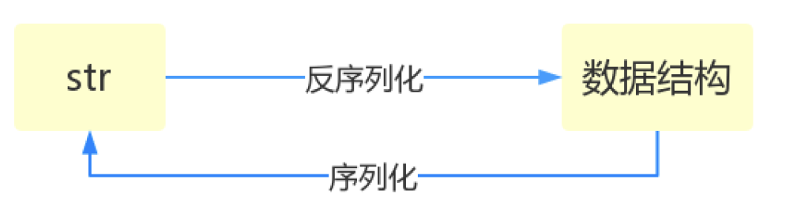
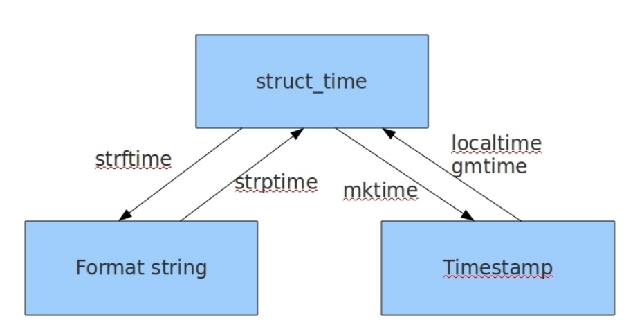
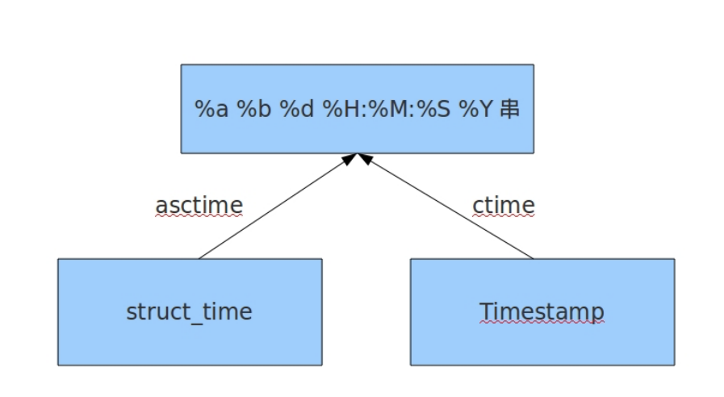

序列化模块 将原本的字典、列表等内容转换成一个字符串的过程就叫做序列化
序列化的目的
以某种存储形式使自定义对象持久化；
将对象从一个地方传递到另一个地方。
使程序更具维护性

python可序列化的数据类型，序列化出来之后的结果如下
Python JSON dict object list,tuple array str string int,float number True true False false None null
json模块(很重要的) Json模块提供了四个功能：dumps、dump、loads、load
1 2 3 4 5 6 7 8 9 10 11 12 13 14 15 16 17 import json'k1' :'v1' ,'k2' :'v2' ,'k3' :'v3' }print (type (str_dic),str_dic)print (type (dic2),dic2)1 ,['a' ,'b' ,'c' ],3 ,{'k1' :'v1' ,'k2' :'v2' }]print (type (str_dic),str_dic)print (type (list_dic2),list_dic2)
json.dumps的参数：
Skipkeys 1,默认值是False，如果dict的keys内的数据不是python的基本类型,2,设置为 False时，就会报TypeError的错误。此时设置成True，则会跳过这类key，3,当 它为True的时候，所有非ASCII码字符显示为\uXXXX序列，只需在dump时将 ensure_ascii设置为False即可，此时存入json的中文即可正常显示。 indent 是一个非负的整型，如果是0就是顶格分行显示，如果为空就是一行最紧凑显示， 否则会换行且按照indent的数值显示前面的空白分行显示，这样打印出来的json 数据也叫pretty-printed json ensure_ascii 当它为True的时候，所有非ASCII码字符显示为\uXXXX序列，只需在dump时将 ensure_ascii设置为False即可，此时存入json的中文即可正常显示。 separators 分隔符，实际上是(item_separator, dict_separator)的一个元组，默认的就是 (‘,’,’:’)；这表示dictionary内keys之间用“,”隔开，而KEY和value之间用“：”隔开。 sort_keys 将数据根据keys的值进行排序
1 2 3 4 5 6 import json'name' :'马牛逼' ,'sex' :'female' ,'age' :88 }True ,indent=2 ,separators=',' ,':' ),ensure_ascii=False )print (json_dic2)
json.dump和json.load不常用，主要是针对文件操作进行序列化和反序列化
1 2 3 4 5 6 7 8 9 10 11 12 13 14 15 16 17 18 19 20 21 22 序列化：import json'k1' :'yh' ,'k2' :'小马过河' }open ('xiaoma.txt' ,mode='w+' ,encoding='utf-8' ) False )print (type (data))print (val)class 'str' >None import jsonopen ('xiaoma.txt' ,mode='r' ,encoding='utf-8' )print (data,type (data))'k1' : 'yh' , 'k2' : '小马过河' } <class 'dict' >
pickle模块 json 用于字符串 和 python数据类型间进行转换 pickle 用于python特有的类型 和 python的数据类型间进行转换
pickle模块提供了四个功能：dumps、dump(序列化，存）、loads（反序列化，读）、load
不仅可以序列化字典，列表…可以把python中任意的数据类型序列化
json模块和picle模块都有 dumps、dump、loads、load四种方法，而且用法一样。
不同的是json模块序列化出来的是通用格式，其它编程语言都认识，就是普通的字符串，
而picle模块序列化出来的只有python可以认识，其他编程语言不认识的，表现为乱码
不过picle可以序列化函数，但是其他文件想用该函数，在该文件中需要有该文件的定义（定义和参数必 须相同，内容可以不同）
1 2 3 4 5 6 7 8 9 10 11 12 13 14 15 16 17 18 import pickle'k1' :'v1' ,'k2' :'v2' ,'k3' :'v3' }print (str_dic)print (dic2)import time1000000000 )print (struct_time)open ('pickle_file' ,'wb' )open ('pickle_file' ,'rb' )print (struct_time2.tm_year)
shelve模块 shelve也是python提供给我们的序列化工具，比pickle用起来更简单一些。
shelve只提供给我们一个open方法，是用key来访问的，使用起来和字典类似。
参考博客
https://www.cnblogs.com/sui776265233/p/9225164.html
1 2 3 4 5 6 7 8 9 import shelveopen ('shelve_file' )'key' ] = {'int' :10 ,'str' :'hello' ,'float' :0.123 }open ('shelve_file' )'key' ]print (ret)
这个模块有个限制，它不支持多个应用同一时间往同一个DB进行写操作。所以当我们知道我们的应用如 果只进行读操作，我们可以让shelve通过只读方式打开DB
1 2 3 4 5 import shelveopen ('shelve_file' ,flag='r' )'key' ]print (ret)
由于shelve在默认情况下是不会记录待持久化对象的任何修改的，所以我们在shelve.open()时候需要修 改默认参数，否则对象的修改不会保存。
1 2 3 4 5 6 7 8 9 10 11 12 import shelveopen ('shelve_file' )print (f1['key' ])'key' ]['k1' ] = 'v1' print (f1['key' ])open ('shelve_file' ,writeback=True ) 'key' ]['k1' ] = 'hello' print (f2['key' ])
使用shelve模块实现简单的数据库
1 2 3 4 5 6 7 8 9 10 11 12 13 14 15 16 17 18 19 20 21 22 23 24 25 26 27 28 29 30 31 32 33 34 35 36 37 38 39 40 41 42 43 44 45 46 47 48 49 50 51 52 53 54 55 56 57 58 59 60 61 62 63 64 65 66 67 68 69 70 71 72 73 74 75 76 77 78 79 80 81 82 83 84 85 import sys,shelvedef print_help ():'存储（增加）、查找、更新（修改）、循环打印、删除、退出、帮助' print ('The available commons are: ' )print ('store : Stores information about a person' )print ('lookup : Looks up a person from ID numbers' )print ("update : Update a person's information from ID number" )print ('print_all: Print all informations' )print ("delete : Delete a person's information from ID number" )print ('quit : Save changes and exit' )print ('? : Print this message' )def store_people (db ):input ('Please enter a unique ID number: ' )'name' ] = input ('Please enter the name: ' )'age' ] = input ('Please enter the age: ' )'phone' ] = input ('Please enter the phone: ' )print ("Store information: pid is %s, information is %s" % (pid, person))def lookup_people (db ):input ('Please enter the number: ' )input ('What would you like to know? (name, age, phone) ' )if pid in db.keys():print ("Pid %s's %s is %s" % (pid, field, value))else :print ('Not found this number' )def update_people (db ):input ('Please enter the number: ' )input ('What would you like to update? (name, age, phone) ' )input ('Enter the new information: ' )if pid in db.keys():print ("Pid %s's %s update information is %s" % (pid, field,newvalue))else :print ("Not found this number, can't update" )def delete_people (db ):input ('Please enter the number: ' )if pid in db.keys():del db[pid]print ("pid %s's information delete done" % pid)else :print ( "Not found this number, can't delete" )def print_all_people (db ):print ( 'All information are: ' )for key, value in db.items():print (key, value)def enter_cmd ():input ('Please enter the cmd(? for help): ' )return cmddef main ():open ('database201803.dat' , writeback=True )try :while True :if cmd == 'store' :elif cmd == 'lookup' :elif cmd == 'update' :elif cmd == 'print_all' :elif cmd == 'delete' :elif cmd == '?' :elif cmd == 'quit' :return finally :if __name__ == '__main__' :
hashlib模块（用于加密提供了大量的加密算法） Python的hashlib提供了常见的摘要算法，如MD5，SHA1等等。
什么是摘要算法呢？摘要算法又称哈希算法、散列算法。它通过一个函数，把任意长度的数据转换为一 个长度固定的数据串（通常用16进制的字符串表示）。
摘要算法就是通过摘要函数f()对任意长度的数据data计算出固定长度的摘要digest，目的是为了发现原 始数据是否被人篡改过。
摘要算法之所以能指出数据是否被篡改过，就是因为摘要函数是一个单向函数，计算f(data)很容易，但 通过digest反推data却非常困难。而且，对原始数据做一个bit的修改，都会导致计算出的摘要完全不同。
1 2 3 4 5 import hashlib'how to use md5 in python hashlib?' .encode('utf-8' ))print (md5.hexdigest())
MD5是最常见的摘要算法，速度很快，生成结果是固定的128 bit字节，通常用一个32位的16进制字符 串表示。另一种常见的摘要算法是SHA1，调用SHA1和调用MD5完全类似
1 2 3 4 5 6 import hashlib'how to use md5 ' .encode('utf-8' ))'in python hashlib?' .encode('utf-8' ))print (sha1.hexdigest())
利用hashlib将我们的注册登录模块保存的密码进行加密
1 2 3 4 5 6 7 8 9 10 11 12 13 14 15 16 17 18 19 20 21 22 23 with open ("db.txt" , "a" , encoding="utf-8" ) as write_file:'utf-8' ))'utf-8' ))":" + user_password_md5 + "\n write_file.write(user_info) print(" 注册成功") #登录部分修改 while True: # 确保用户密码正确 user_password = input(" 请输入登录密码；\n") flag2 = False for dict4 in list1: md5 =hashlib.md5() md5.update(user_name.encode('utf-8')) md5.update(user_password.encode('utf-8')) user_password_md5=md5.hexdigest() if dict4[" username"] == user_name and dict4[" password"] ==user_password_md5: flag2 = True
摘要算法应用 任何允许用户登录的网站都会存储用户登录的用户名和口令。如何存储用户名和口令呢？方法是存到数据库表中
1 2 3 4 5 name | password123456
如果使用md5来将保护密码那么就是这样
1 2 3 4 5 username | password ---------+---------------------------------
有很多md5撞库工具，可以轻松的将简单密码给碰撞出来
所以，要确保存储的用户口令不是那些已经被计算出来的常用口令的MD5，这一方法通过对原始口令加 一个复杂字符串来实现，俗称“加盐
经过Salt处理的MD5口令，只要Salt不被黑客知道，即使用户输入简单口令，也很难通过MD5反推明文口令
但是如果有两个用户都使用了相同的简单口令比如123456，在数据库中，将存储两条相同的MD5值， 这说明这两个用户的口令是一样的。
如果假定用户无法修改登录名，就可以通过把登录名作为Salt的一部分来计算MD5，从而实现相同口令 的用户也存储不同的MD5。
configparser模块（专门对配置文件的修改） 该模块适用于配置文件的格式与windows ini文件类似，可以包含一个或多个节（section），每个节可 以有多个参数（键=值）。
常见的文档格式
1 2 3 4 5 6 7 8 9 10 11 12 [default]45 9 50022
使用python生成一个这样的文件
1 2 3 4 5 6 7 8 9 10 11 12 13 14 15 import configparser'default' ] = {'ServerAliveInterval' :'45' ,'Compression' :'yes' ,'CompressionLevel' :'9' ,'ForwardX11' :'yes' 'bitbucket.org' ] = {'User' :'hg' }'topsecret.server.com' ] = {'Port' :'50022' ,'ForwardX11' :'no' with open ('config' ,'w' ) as config:
查找配置文件中的所有section和option
1 2 3 4 5 6 7 8 9 import configparser'config' )print (secs)for sec in secs:print (sec,conf.options(sec))
查找配置文件中option的值
1 2 3 4 5 6 7 8 9 10 11 12 13 14 import configparser'config' )print (secs)for sec in secs:print (sec,conf.options(sec))'default' ,'serveraliveinterval' )print (serveraliveinterval)'bitbucket.org' ,'user' )print (user)
修改配置文件
1 2 3 4 5 6 7 8 9 10 11 12 13 14 15 import configparser'config' )if not conf.has_section('ABC' ):"ABC" )set ("ABC" , "abc" , "123" )set ('topsecret.server.com' ,'ip' ,'192.168.1.1' )with open ('config' , 'w+' ) as f:
删除某些section和option
1 2 3 4 5 6 7 8 9 10 11 import configparser'config' )'ABC' )'topsecret.server.com' , 'ip' )with open ('config' , 'w+' ) as f:
查找配置文件中option的值
1 2 3 4 5 6 7 8 9 10 11 12 13 14 import configparser'config' )print (secs)for sec in secs:print (sec,conf.options(sec))'default' ,'serveraliveinterval' )print (serveraliveinterval)'bitbucket.org' ,'user' )print (user)
修改配置文件
1 2 3 4 5 6 7 8 9 10 11 12 13 14 15 16 import configparser'config' )if not conf.has_section('ABC' ):"ABC" )set ("ABC" , "abc" , "123" )set ('topsecret.server.com' ,'ip' ,'192.168.1.1' )with open ('config' , 'w+' ) as f:
删除某些section和option
1 2 3 4 5 6 7 8 9 10 11 import configparser'config' )'ABC' )'topsecret.server.com' , 'ip' )with open ('config' , 'w+' ) as f:
logging模块（记录程序运行的日志模块） 参考博客：
https://blog.csdn.net/pansaky/article/details/90710751
函数式简单配置 1 2 3 4 5 6 7 import logging'debug message' )'info message' )'warning message' )'error message' )'critical message' )
默认情况下Python的logging模块将日志打印到了标准输出中，且只显示了大于等于WARNING级别的日 志，这说明默认的日志级别设置为WARNING（日志级别等级CRITICAL > ERROR > WARNING > INFO > DEBUG），默认的日志格式为日志级别：Logger名称：用户输出消息。
1 2 3 4 5 6 7 8 9 10 11 12 13 14 import loggingformat ='%(asctime)s %(filename)s[line:%(lineno)d] % (levelname)s %(message)s' ,'%a, %d %b %Y %H:%M:%S' ,'test.log' ,'w' )'debug message' )'info message' )'warning message' )'error message' )'critical message' )
参数解释
ogging.basicConfig()函数中可通过具体参数来更改logging模块默认行为，可用参数有：
filename：用指定的文件名创建FiledHandler，这样日志会被存储在指定的文件中。
filemode：文件打开方式，在指定了filename时使用这个参数，默认值为“a”还可指定为“w”。
format：指定handler使用的日志显示格式。
datefmt：指定日期时间格式。
level：设置rootlogger（后边会讲解具体概念）的日志级别
stream：用指定的stream创建StreamHandler。可以指定输出到sys.stderr,sys.stdout或者文件 (f=open- (‘test.log’,’w’))，默认为sys.stderr。若同时列出了filename和stream两个参数，则 stream参数会被忽略。
format参数中可能用到的格式化串
%(name)s Logger的名字
%(levelno)s 数字形式的日志级别
%(levelname)s 文本形式的日志级别
%(pathname)s 调用日志输出函数的模块的完整路径名，可能没有
%(filename)s 调用日志输出函数的模块的文件名
%(module)s 调用日志输出函数的模块名
%(funcName)s 调用日志输出函数的函数名
%(lineno)d 调用日志输出函数的语句所在的代码行
%(created)f 当前时间，用UNIX标准的表示时间的浮 点数表示
%(relativeCreated)d 输出日志信息时的，自Logger创建以 来的毫秒数
%(asctime)s 字符串形式的当前时间。默认格式是 “2003-07-08 16:49:45,896”。逗号后面的是毫秒
%(thread)d 线程ID。可能没有
%(threadName)s 线程名。可能没有
%(process)d 进程ID。可能没有
%(message)s用户输出的消息
logger对象配置（也与日志有关） 1 2 3 4 5 6 7 8 9 10 11 12 13 14 15 16 17 18 19 20 21 22 import logging'test.log' ,encoding='utf-8' )'%(asctime)s - %(name)s - %(levelname)s - %(message)s' )'logger debug message' )'logger info message' )'logger warning message' )'logger error message' )'logger critical message' )
logging库提供了多个组件：Logger、Handler、Filter、Formatter。Logger对象提供应用程序可直接使用的接口，Handler发送日志到适当的目的地，Filter提供了过滤日志信息的方法，Formatter指定日志显示格式。
logger的配置文件 1 2 3 4 5 6 7 8 9 10 11 12 13 14 15 16 17 18 19 20 21 22 23 24 25 26 27 28 29 30 31 32 33 34 35 36 37 38 39 40 41 42 43 44 45 46 47 48 49 50 51 52 53 54 55 56 57 58 59 60 61 62 63 64 65 66 67 68 69 70 71 72 73 74 75 76 """ logging配置 """ import osimport logging.config'[%(asctime)s][%(threadName)s:%(thread)d][task_id:%(name)s][%(filename)s:%(lineno)d]' \'[%(levelname)s][%(message)s]' '[%(levelname)s][%(asctime)s][%(filename)s:%(lineno)d]%(message)s' '[%(levelname)s][%(asctime)s] %(message)s' 'all2.log' if not os.path.isdir(logfile_dir):'version' : 1 ,'disable_existing_loggers' : False ,'formatters' : {'standard' : {'format' : standard_format'simple' : {'format' : simple_format'filters' : {},'handlers' : {'console' : {'level' : 'DEBUG' ,'class' : 'logging.StreamHandler' , 'formatter' : 'simple' 'default' : {'level' : 'DEBUG' ,'class' : 'logging.handlers.RotatingFileHandler' , 'formatter' : 'standard' ,'filename' : logfile_path, 'maxBytes' : 1024 *1024 *5 , 'backupCount' : 5 ,'encoding' : 'utf-8' , 'loggers' : {'' : {'handlers' : ['default' , 'console' ], 'level' : 'DEBUG' ,'propagate' : True , def load_my_logging_cfg ():'It works!' ) if __name__ == '__main__' :
1 2 3 4 5 6 7 8 9 10 11 12 13 14 15 16 17 18 19 20 21 22 23 24 25 26 27 28 29 30 31 32 33 34 35 36 37 38 39 40 41 42 43 44 45 46 47 注意：1 、从字典加载配置：logging.config.dictConfig(settings.LOGGING_DIC)2 、拿到logger对象来产生日志'loggers子字典的key名' )'loggers' : {'l1' : {'handlers' : ['default' , 'console' ], 'level' : 'DEBUG' ,'propagate' : True , 'l2: { ' handlers': [' default', ' console' ], ' level': ' DEBUG', ' propagate': False, # 向上（更高level的logger）传递 }, ' l3': { ' handlers': [' default', ' console'], # ' level': ' DEBUG', ' propagate': True, # 向上（更高level的logger）传递 }, } #我们的解决方式是，定义一个空的key ' loggers': { ' ': { ' handlers': [' default', ' console'], ' level': ' DEBUG', ' propagate': True, }, } 这样我们再取logger对象时 logging.getLogger(__name__)，不同的文件__name__不同，这保证了打印日志时标识信息不同，但是拿着该名字去loggers里找key名时却发现找不到，于是默认使用key=' '的配置
collections模块(用来提供额外的数据结构) 在内置数据类型（dict、list、set、tuple）的基础上，collections模块还提供了几个额外的数据类型： Counter、deque、defaultdict、namedtuple和OrderedDict等。
namedtuple: 生成可以使用名字来访问元素内容的tuple
deque: 双端队列，可以快速的从另外一侧追加和推出对象
Counter: 计数器，主要用来计数
defaultdict: 带有默认值的字典
namedtuple（用于表示二位坐标） 1 2 3 4 from collections import namedtuple'point' ,['x' ,'y' ])1 ,2 )print (p.x)
一个点的二维坐标就可以表示成,但是，看到(1, 2)，很难看出这个tuple是用来表示一个坐标的。 这时，namedtuple就派上了用场
deque（双向链表，可高效插入删除操作，适合队列和栈） 1 2 3 4 5 6 7 from collections import deque'a' ,'b' ,'c' ])'x' )'y' )print (q)
deque除了实现list的append()和pop()外，还支持appendleft()和popleft()，这样就可以非常高效地往头 部添加或删除元素。
defaultdict 有如下值列表 [11,22,33,44,55,66,77,88,99,90…]，将所有大于 66 的值保存至字典的第一个key中，将小 于 66 的值保存至第二个key的值中。
即： {‘k1’: 大于66 , ‘k2’: 小于66}
1 2 3 4 5 6 7 8 9 10 11 12 13 14 15 16 17 18 19 20 21 22 23 24 25 26 27 28 29 11 ,22 ,33 ,44 ,55 ,77 ,88 ,99 ,90 ]for row in li:if row < 66 :if 'key1' not in result:'key1' ]=[]'key1' ].append(row)else :if 'key2' not in result:'key2' ]=[]'key2' ].append(row)print (result)from collections import defaultdict11 ,22 ,33 ,44 ,55 ,77 ,88 ,99 ,90 ]list )print (result)for row in li:if row > 66 :'key1' ].append(row)else :'key2' ].append(row)print (result)
counter Counter类的目的是用来跟踪值出现的次数。它是一个无序的容器类型，以字典的键值对形式存储，其中元素作为key，其计数作为value。
1 2 3 4 from collections import Counter'qazxswqazxswqazxswsxaqwsxaqws' )print (c)
时间有关的模块 time模块 常用方法
time.sleep(secs)
(线程)推迟指定的时间运行。单位为秒。
time.time()
获取当前时间戳
表示时间的三种方式
在Python中，通常有这三种方式来表示时间：时间戳、元组(struct_time)、格式化的时间字符串：
时间戳(timestamp) ：通常来说，时间戳表示的是从1970年1月1日00:00:00开始按秒计算的偏移 量。我们运行“type(time.time())”，返回的是float类型。
格式化的时间字符串(Format String)： ‘1999-12-06’
%y 两位数的年份表示（00-99） %Y 四位数的年份表示（000-9999） %m 月份（01-12） %d 月内中的一天（0-31） %H 24小时制小时数（0-23） %I 12小时制小时数（01-12） %M 分钟数（00=59） %S 秒（00-59） %a 本地简化星期名称 %A 本地完整星期名称 %b 本地简化的月份名称 %B 本地完整的月份名称 %c 本地相应的日期表示和时间表示 %j 年内的一天（001-366） %p 本地A.M.或P.M.的等价符 %U 一年中的星期数（00-53）星期天为星期的开始 %w 星期（0-6），星期天为星期的开始 %W 一年中的星期数（00-53）星期一为星期的开始 %x 本地相应的日期表示 %X 本地相应的时间表示 %Z 当前时区的名称 %% %号本身
元组(struct_time) ：struct_time元组共有9个元素共九个元素:(年，月，日，时，分，秒，一年中 第几周，一年中第几天等）
索引（Index） 属性（Attribute） 值（Values） 0 tm_year（年） 比如2011 1 tm_mon（月） 1月12日 2 tm_mday（日） 1月31日 3 tm_hour（时） 0 - 23 4 tm_min（分） 0 - 59 5 tm_sec（秒） 0 - 60 6 tm_wday（weekday） 0 - 6（0表示周一） 7 tm_yday（一年中的第几天） 1 - 366 8 tm_isdst（是否是夏令时） 默认为0
1 2 3 4 5 6 7 8 9 10 11 import timeprint (time.time())print (time.strftime('%Y -%m -%d %X '))print (time.strftime('%Y -%m -%d %H -%M -%S '))print (time.localtime())
小结：时间戳是计算机能够识别的时间；时间字符串是人能够看懂的时间；元组则是用来操作时间的
几种格式之间的转换

1 2 3 4 5 6 7 8 9 10 11 12 13 14 15 16 17 import time'%Y/%m/%d %H:%M:%S' )print ('ft' ,ft)'%Y/%m/%d %H:%M:%S' )print ('st' ,st)print ('t' ,t)print ('st' ,st)'%Y/%m/%d %H:%M:%S' ,st)print ('ft' ,ft)

1 2 3 4 5 6 7 8 9 import time%a %b %d %H :%M :%S %Y 串time (结构化时间) 如果不传参数，直接返回当前时间的格式化串int (time.asctime (time.localtime (1550312090.4021888)))%a %d %d %H :%M :%S %Y 串time (时间戳) 如果不传参数，直接返回当前时间的格式化串int (time.ctime (1550312090.4021888))
计算时间差
1 2 3 4 5 6 7 8 9 10 11 12 import time'2017-09-11 08:30:00' ,'%Y-%m-%d %H:%M:%S' ))'2019-09-12 11:00:50' ,'%Y-%m-%d %H:%M:%S' ))print ('过去了%d年%d月%d天%d小时%d分钟%d秒' %(struct_time.tm_year-1970 ,struct_time.tm_mon-1 ,1 ,struct_time.tm_hour,
显示进度条
1 2 3 4 5 6 7 8 import timefor i in range (0 ,101 ,2 ):0.1 )2 '\r%s%% : %s\n' % (i, '*' * char_num) \if i == 100 else '\r%s%% : %s' % (i,'*' *char_num)print (per_str,end='' , flush=True )
这是换一种方式显示
1 2 3 4 5 6 7 8 9 import timeprint ("游戏开始加载" )for i in range (0 , 101 , 2 ):0.1 )'\r[%s' % ('#' * char_num)print (per_str+"%s" % "_" *(50 - char_num), "%s%%]" % i, end='' )print ("" )
datatime模块 1 2 3 4 5 6 7 8 9 10 11 12 13 14 15 16 17 18 19 20 21 22 23 24 import datetimeprint (datetime.datetime.now() + datetime.timedelta(weeks=3 )) print (datetime.datetime.now() + datetime.timedelta(weeks=-3 )) print (datetime.datetime.now() + datetime.timedelta(days=-3 )) print (datetime.datetime.now() + datetime.timedelta(days=3 )) print (datetime.datetime.now() + datetime.timedelta(hours=5 )) print (datetime.datetime.now() + datetime.timedelta(hours=-5 )) print (datetime.datetime.now() + datetime.timedelta(minutes=-15 )) print (datetime.datetime.now() + datetime.timedelta(minutes=15 )) print (datetime.datetime.now() + datetime.timedelta(seconds=-70 )) print (datetime.datetime.now() + datetime.timedelta(seconds=70 )) print (current_time.replace(year=1977 )) print (current_time.replace(month=1 )) print (current_time.replace(year=1989 ,month=4 ,day=25 )) 18 :49 :05.898601 print (datetime.date.fromtimestamp(1232132131 ))
random模块 用来生成随机数模块
1 2 3 4 5 6 7 8 9 10 11 12 13 14 15 16 17 18 19 import randomprint (random.random()) print (random.uniform(1 ,3 )) print (random.randint(1 ,5 )) print (random.randrange(1 ,10 ,2 )) 1 ,'23' ,[4 ,5 ]]) print (ret)1 ,'23' ,[4 ,5 ]],2 ) print (a,b)1 ,3 ,5 ,7 ,9 ]print (item)
生成随机验证码
1 2 3 4 5 6 7 8 9 10 11 12 13 14 15 import randomdef v_code ():'' for i in range (5 ):0 ,9 )chr (random.randint(65 ,90 )) "" .join([code,str (add)])return codeprint (v_code())
注册登录案例添加验证码
1 2 3 4 5 6 7 8 9 def get_code ():'' for i in range (5 ):0 , 9 )chr (random.randint(65 , 90 )) '' .join([code, str (add)])return code
斗地主发牌
1 2 3 4 5 6 7 8 9 10 11 12 13 14 15 16 17 18 19 20 21 22 23 24 25 26 27 28 29 30 31 32 33 34 35 36 37 38 39 40 41 42 43 44 45 46 def fight_whit_the_landowner (): print ("斗地主游戏即将开始" )0 for i in range (1 , 14 ):if i == 11 :'J' elif i == 12 :'Q' elif i == 13 :'K' elif i == 1 :'A' for i in range (1 , 14 ):"♠" + str (i))"♣" + str (i))"♦" + str (i))"♥" + str (i))'大王' )'小王' )for i in range (1 , 10 ):while ci_shu < 51 :1 ])2 ])3 ])3 print ('''底牌：%s''' % card[52 :55 ])52 :55 ])print ('''一号农民的牌：%s''' % farmer1)print ('''二号农民的牌：%s''' % farmer2)print ('''地主的牌：%s''' % landowner)input ("输入again重新来一局，输入quit退出" )if choice == 'again' :elif choice == 'quit' :return else :return
OS模块 os模块是与操作系统交互的一个接口
当前执行这个python文件的工作目录相关的工作路径
os.getcwd() 获取当前工作目录，即当前python脚本工作的目录路径 os.chdir(“dirname”) 改变当前脚本工作目录；相当于shell下cd os.curdir 返回当前目录: (‘.’) os.pardir 获取当前目录的父目录字符串名：(‘…’)
文件夹相关
os.makedirs(‘dirname1/dirname2’) 可生成多层递归目录 os.removedirs(‘dirname1’) 若目录为空，则删除，并递归到上一级目录，如若也为 空，则删除，依此类推 os.mkdir(‘dirname’) 生成单级目录；相当于shell中mkdir dirname os.rmdir(‘dirname’) 删除单级空目录，若目录不为空则无法删除，报错；相 当于shell中rmdir dirname os.listdir(‘dirname’) 列出指定目录下的所有文件和子目录，包括隐藏文件， 并以列表方式打印
文件相关
os.remove() 删除一个文件 os.rename(“oldname”,“newname”) 重命名文件/目录 os.stat(‘path/filename’) 获取文件/目录信息
操作系统差异相关
os.sep 输出操作系统特定的路径分隔符，win下为"",Linux下为"/" os.sep 输出当前平台使用的行终止符，win下为"\t\n",Linux下为"\n" os.pathsep 输出当前平台使用的行终止符，win下为"\t\n",Linux下为"\n" os.name 输出当前平台使用的行终止符，win下为"\t\n",Linux下为"\n"
执行系统命令相关
执行系统命令相关 os.environ 执行系统命令相关 运行shell命令，获取执行结果 os.environ 获取系统环境变量
path系列，和路径相关
os.path.abspath(path) 返回path规范化的绝对路径 os.path.split(path) 将path分割成目录和文件名二元组返回 os.path.dirname(path) 返回path的目录。其实就是os.path.split(path)的第一个元素 os.path.basename(path) 返回path最后的文件名。如何path以／或\结尾，那么就会返回空 值，即os.path.split(path)的第二个元素。 os.path.exists(path) 如果path存在，返回True；如果path不存在，返回False os.path.isabs(path) 如果path是绝对路径，返回True os.path.isfile(path) 如果path是一个存在的文件，返回True。否则返回False os.path.isdir(path) 如果path是一个存在的目录，则返回True。否则返回False os.path.join(path1[, path2[, …]]) 将多个路径组合后返回，第一个绝对路径之前的参数将被忽略 os.path.getatime(path) 返回path所指向的文件或者目录的最后访问时间 os.path.getmtime(path) 返回path所指向的文件或者目录的最后修改时间 os.path.getsize(path) 返回path的大小
1 2 3 4 5 6 7 8 import osprint (os.stat('.\config' )) 1 , st_uid=0 , st_gid=0 , st_size=185 , st_atime=1550285376 ,1550285376 , st_ctime=1550285376 )
st_mode inode 保护模式 st_ino inode 节点号 st_dev inode 驻留的设备 st_nlink inode 的链接数 st_uid 所有者的用户ID st_gid 所有者的组ID st_size 普通文件以字节为单位的大小；包含等待某些特殊文件的数据 st_atime 上次访问的时间 st_mtime 最后一次修改的时间 st_ctime 由操作系统报告的"ctime"。在某些系统上（如Unix）是最新的元数据更改的时间， 在其它系统上（如Windows）是创建时间（详细信息参见平台的文档）
sys模块 sys模块是与python解释器交互的一个接口
sys.argv 命令行参数List，第一个元素是程序本身路径，可以接收一些执行程序时传递的 参数 sys.exit(n) 退出程序，正常退出时exit(0),错误退出sys.exit(1) sys.version 获取Python解释程序的版本信息 sys.path 返回模块的搜索路径，初始化时使用PYTHONPATH环境变量的值 sys.platform 返回操作系统平台名称
re模块(用于网络爬虫) 正则表达式 正则就是用一些具有特殊含义的符号组合到一起（称为正则表达式）来描述字符或者字符串的方法。或 者说：正则就是用来描述一类事物的规则。（在Python中）它内嵌在Python中，并通过 re 模块实现。 正则表达式模式被编译成一系列的字节码，然后由用 C 编写的匹配引擎执行
元字符 匹配内容 \w 匹配字母（包含中文）或数字或下划线 \W 匹配非字母（包含中文）或数字或下划线 \s 匹配任意的空白符 \S 匹配任意非空白符 \d 匹配数字 \D 匹配非数字 \A 从字符串开头匹配 \z 匹配字符串的结束，如果是换行，只匹配到换行前的结果 \n 匹配一个换行符 \t 匹配一个制表符 ^ 匹配字符串的开始 $ 匹配字符串的结尾 . 匹配任意字符，除了换行符，当re.DOTALL标记被指定时，则可以匹配包括换行符的任 意字符。 […] 匹配字符组中的字符 [^…] 匹配除了字符组中的字符的所有字符 * 匹配0个或者多个左边的字符。 + 匹配一个或者多个左边的字符。 ? 匹配0个或者1个左边的字符，非贪婪方式。 {n} 精准匹配n个前面的表达式。 {n,m} 匹配n到m次由前面的正则表达式定义的片段，贪婪方式 () 匹配括号内的表达式，也表示一个组
单字符匹配 1 2 3 4 5 6 7 8 9 10 11 12 13 14 15 16 17 18 19 20 import reprint (re.findall('\w' ,'上大人123asdfg%^&*(_ \t \n)' ))print (re.findall('\W' ,'上大人123asdfg%^&*(_ \t \n)' ))print (re.findall('\s' ,'上大人123asdfg%^&*(_ \t \n)' ))print (re.findall('\S' ,'上大人123asdfg%^&*(_ \t \n)' ))print (re.findall('\d' ,'上大人123asdfg%^&*(_ \t \n)' ))print (re.findall('\D' ,'上大人123asdfg%^&*(_ \t \n)' ))print (re.findall('\A上大' ,'上大人123asdfg%^&*(_ \t \n)' ))print (re.findall('^上大' ,'上大人123asdfg%^&*(_ \t \n)' ))print (re.findall('666\z' ,'上大人123asdfg%^&*(_ \t \n)666' ))print (re.findall('666\Z' ,'上大人123asdfg%^&*(_ \t \n)666' ))print (re.findall('666$' ,'上大人123asdfg%^&*(_ \t \n)666' ))print (re.findall('\n' ,'上大人123asdfg%^&*(_ \t \n)' ))print (re.findall('\t' ,'上大人123asdfg%^&*(_ \t \n)' ))
重复匹配 1 2 3 4 5 6 7 8 9 10 11 12 13 14 15 16 17 18 19 20 21 22 23 24 25 26 27 28 29 30 31 32 33 34 35 36 37 38 39 40 41 import reprint (re.findall('a.b' , 'ab aab a*b a2b a牛b a\nb' ))print (re.findall('a.b' , 'ab aab a*b a2b a牛b a\nb' ,re.DOTALL))print (re.findall('a?b' , 'ab aab abb aaaab a牛b aba**b' ))print (re.findall('a*b' , 'ab aab aaab abbb' ))print (re.findall('ab*' , 'ab aab aaab abbbbb' ))print (re.findall('a+b' , 'ab aab aaab abbb' ))print (re.findall('a{2,4}b' , 'ab aab aaab aaaaabb' ))print (re.findall('a.*b' , 'ab aab a*()b' )) print (re.findall('a.*?b' , 'ab a1b a*()b, aaaaaab' ))print (re.findall('a.b' , 'a1b a3b aeb a*b arb a_b' ))print (re.findall('a[abc]b' , 'aab abb acb adb afb a_b' ))print (re.findall('a[0-9]b' , 'a1b a3b aeb a*b arb a_b' ))print (re.findall('a[a-z]b' , 'a1b a3b aeb a*b arb a_b' ))print (re.findall('a[a-zA-Z]b' , 'aAb aWb aeb a*b arb a_b' ))print (re.findall('a[0-9][0-9]b' , 'a11b a12b a34b a*b arb a_b' ))print (re.findall('a[*-+]b' ,'a-b a*b a+b a/b a6b' ))print (re.findall('a[-*+]b' ,'a-b a*b a+b a/b a6b' ))print (re.findall('a[^a-z]b' , 'acb adb a3b a*b' ))print (re.findall('(.*?)_sb' , 'cs_sb zhao_sb 日天_sb' ))print (re.findall('href="(.*?)"' ,'<a href="http://www.baidu.com">点击</a>' ))print (re.findall('compan(y|ies)' ,'Too many companies have gone bankrupt, and the next one is my company' ))print (re.findall('compan(?:y|ies)' ,'Too many companies have gone bankrupt, and the next one is my company' ))
常用方法举例 1 2 3 4 5 6 7 8 9 10 11 12 13 14 15 16 17 18 19 20 21 22 23 24 25 26 27 28 29 30 import reprint (re.findall('a' ,'aghjmnbghagjmnbafgv' ))None print (re.search('sb|chensong' , 'chensong sb sb demon 日天' ))print (re.search('chensong' , 'chensong sb sb barry 日天' ).group())print (re.match ('sb|chensong' , 'chensong sb sb demon 日天' ))print (re.match ('chensong' , 'chensong sb sb barry 日天' ).group())print (re.split('[:：,;；，]' ,'1;3,c,a：3' ))print (re.sub('帅哥' ,'sb' ,'陈松是一个帅哥' ))compile ('\d{2}' )print (obj.search('abc123eeee' ).group())print (obj.findall('1231232aasd' ))'\d' ,'asd123affess32432' ) print (ret)print (next (ret).group())print (next (ret).group())print ([i.group() for i in ret])
命名分组举例 命名分组匹配
1 2 3 4 5 6 7 8 9 10 11 12 import re"<(?P<tag_name>\w+)>\w+</(?P=tag_name)>" ,"<h1>hello</h1>" )print (ret.group('tag_name' ))print (ret.group())r"<(\w+)>\w+</\1>" ,"<h1>hello</h1>" )print (ret.group(1 ))print (ret.group())
利用re模块实现网络爬虫
1 2 .3 gbizhi.com/meinv/index_1.html
1 2 3 4 5 6 7 8 9 10 11 12 13 14 15 16 17 18 19 20 21 22 23 24 25 26 27 28 29 30 31 32 33 34 35 36 import osimport refrom urllib.request import Request, urlopen, urlretrieve"bizhi" def download (n ):if not os.path.isdir(path):for i in range (1 ,n+1 ):f"https://www.3gbizhi.com/meinv/index_{str (i)} .html" print (url)'User-Agent' : 'Mozilla/5.0 (Windows NT 10.0; Win64; x64) AppleWebKit/537.36 (KHTML, like Gecko) Chrome/101.0.4951.64 Safari/537.36' "utf-8" )'lazysrc="(.*?jpg)"' ,content)'img alt="(.*?)"' ,content)list (zip (name,link))for imgurl in ziplist:1 ],f'{path} {os.sep} {imgurl[0 ]} .jpg' )def main ():int (input ("请输入要下载的页数:" ))print ("下载完成，请查看文件夹" )if __name__ == '__main__' :
1 2 0 &filter =
shutil模块 高级的 文件、文件夹、压缩包 处理模块
shutil.copyfileobj(fsrc, fdst[, length]) 将文件内容拷贝到另一个文件中
1 2 3 import shutilopen ('config' ,'r' ),open ('config.new' ,'w' ))
shutil.copyfile(src, dst) 拷贝文件
1 2 3 import shutil'config' ,'config1' )
shutil.copymode(src, dst) 仅拷贝权限。内容、组、用户均不变
1 2 3 import shutil'config' ,'config1' )
shutil.copystat(src, dst) 仅拷贝状态的信息，包括：mode bits, atime, mtime, flags
1 2 3 import shutil'config' ,'config1' )
shutil.copy(src, dst) 拷贝文件和权限
1 2 3 import shutil'config' ,'config1' )
shutil.ignore_patterns(*patterns) shutil.copytree(src, dst, symlinks=False, ignore=None) 递归的去拷贝文件夹
1 2 3 4 5 6 7 8 9 10 import shutil'folder1' , 'folder2' , ignore=shutil.ignore_patterns('*.pyc' ,'tmp*' ))'f1' , 'f2' , symlinks=True ,'*.pyc' , 'tmp*' ))
shutil.rmtree(path[, ignore_errors[, onerror]]) 递归的去删除文件
1 2 3 import shutil'folder1' )
shutil.move(src, dst) 递归的去移动文件，它类似mv命令，其实就是重命名。
1 2 3 import shutil'folder1' , 'folder3' )
创建压缩包并返回文件路径，例如：zip、tar
base_name： 压缩包的文件名，也可以是压缩包的路径。只是文件名时，则保存至当前目 录，否则保存至指定路径如 data_bak =>保存至当前路径 如：/tmp/data_bak =>保存至/tmp/ format： 压缩包种类，“zip”, “tar”, “bztar”，“gztar” root_dir： 要压缩的文件夹路径（默认当前目录） owner： 用户，默认当前用户 group： 组，默认当前组 logger： 用于记录日志，通常是logging.Logger对象 1 2 3 4 5 6 7 import shutil"data_bak" , 'gztar' , root_dir='/data' )import shutil"/tmp/data_bak" , 'gztar' , root_dir='/data' )
shutil 对压缩包的处理是调用 ZipFile 和 TarFile 两个模块来进行的
1 2 3 4 5 6 7 8 9 10 11 12 import zipfile'laxi.zip' , 'w' )'a.log' )'data.data' )'laxi.zip' , 'r' )'.' )
1 2 3 4 5 6 7 8 9 10 11 12 import tarfileopen ('/tmp/egon.tar' ,'w' )'/test1/a.py' ,arcname='a.bak' )'/test1/b.py' ,arcname='b.bak' )open ('/tmp/egon.tar' ,'r' )'/egon' )